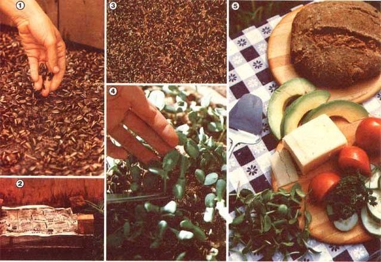

Even if the winter snow is chin-deep to a short giraffe, you can grow delectable snackin’ or salad greens on your windowsill!
As far as my tastebuds are concerned, sprouted sunflowers are about the most delicious germinated seeds available ... and I've tried nearly all of the common sprout varieties including alfalfa, lentil, radish, fenugreek, garbanzo, wheat, soy, mung, azuka, red clover, cress, and chia.
Also-while many of us do know that sunflower seeds are nutritionally potent little packages-few people realize that the tasty kernels are almost 25% protein ... contain vitamins A, D, E, and the B complex ... provide incredible amounts of potassium ... and are high in calcium, magnesium, and iron. And, of course-since germination activates a plant's stored energy-the sprouts have fewer calories, yet more of all these vitamins and minerals than do the dry seeds!
However, unlike most sprouts (which can be grown in a simple screen-topped jar), baby sunflowers are germinated upon soil. An old drawer-with small holes drilled in the bottom for drainage-makes an ideal sprout box ... or, if you prefer, you can simply construct a flat out of scrap lumber. (In either case, the depth of the growing container need not exceed three inches.) Then, cover the drainage holes with pebbles ... fill the box-to a depth of about two inches-with garden soil... and place it in a sunny location (a heated greenhouse would, of course, serve this purpose perfectly, but a good "southerly" window can provide all the light you'll need). Next-in order to have 2-1/2 square feet of these crisp and tender morsels ready for the table in seven to ten days-follow this procedure:
[1] Soak 4 cups of unhulled sunflower seeds for 8 to 12 hours ... scatter them one layer thick ... and press 'em down (firmly) on the soil with your hands.
[2] Sprinkle the box with water and cover it with newspaper.
[3] Water the seeds- through the newspaper-once a day until the growing sprouts start pushing the paper up ... which should take two to four days, depending on the temperature. Then remove the newsprint and continue to give the seedlings a drink daily, picking the seed hulls off the leaves only after the small plants begin to stand up.
[4] Reap your harvest with scissors when the first two leaves open ... rinse ... shake dry... and-if you don't eat 'em all in one sitting-store the excess in the refrigerator.
[5] Voila! You're ready for some delicious, nutritious, "garden"-fresh treats.
|
 |
|
|